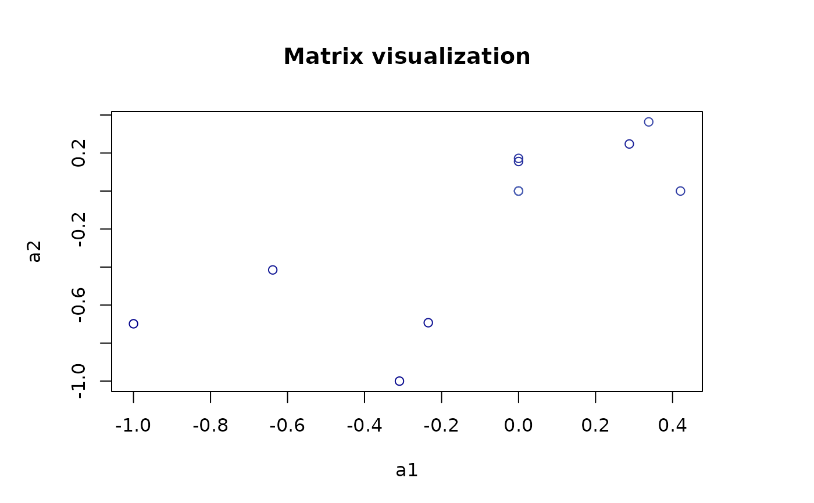

Calculating the degree of diagonal dominance for a tripartite network with intra-guild interactions.
ddom(mat)Return the average degree of diagonal dominance and a vector of diagonal dominance indices for all nodes.
To calculate degree of diagonal dominance, the input is a block matrix to represent three groups of nodes (a-nodes, b-nodes and c-nodes): three intra-guild interaction matrices (\(m_{aa},m_{bb},m_{cc}\)), two inter-guild matrices of a and b-nodes (\(m_{ab},m_{ba}\)), and two inter-guild matrices of b- and c-nodes(\(m_{bc},m_{cb}\)). $$ \left( \begin{array}{ccc} m_{aa} & m_{ab} & 0 \\ m_{ba} & m_{bb} & m_{bc} \\ 0 & m_{cb} & m_{cc} \end{array} \right) $$ This function follows the definition by García-Callejas et al (2023). Diagonal dominance is a matrix property indicating diagonal elements are larger than the sum of non-diagonal elements. In a tripartite network with intra-guild interactions, García-Callejas et al. proposed a continuous diagonal dominance index by calculating the difference between the diagonal and the sum of non-diagonal elements for each node. The average degree of diagonal dominance (\(d\)) is calculated by averaging all the nodes' values. $$ d = \sum_{i \in S} \frac{(M_{ii} - \sum_{j \in S,j \neq i}M_{ij})}{S} $$ Where S is the number of species in the tripartite network \(M\).
García-Callejas, D., Godoy, O., Buche, L., Hurtado, M., Lanuza, J.B., Allen-Perkins, A. et al. (2023) Non-random interactions within and across guilds shape the potential to coexist in multi-trophic ecological communities. Ecology Letters, 26, 831–842.
## A toy tripartite network with intra-guild negative interactions, inter-guild mutualistic interactions and inter-guild antagonistic interactions.
set.seed(12)
##4 a-nodes,5 b-nodes, and 3 c-nodes
##intra-guild interaction matrices
mat_aa<-matrix(runif(16,-0.8,-0.2),4,4)
mat_bb<-matrix(runif(25,-0.8,-0.2),5,5)
mat_cc<-matrix(runif(9,-0.8,-0.2),3,3)
##inter-guild interaction matrices between a- and b-nodes.
mat_ab<-mat_ba<-matrix(sample(c(rep(0,8),runif(12,0,0.5))),4,5,byrow=T)# interaction probability = 12/20
mat_ba[mat_ba>0]<-runif(12,0,0.5);mat_ba<-t(mat_ba)
##inter-guild interaction matrices between b- and c-nodes.
mat_cb<-mat_bc<-matrix(sample(c(rep(0,8),runif(7,0,0.5))),3,5,byrow=T)# interaction probability = 7/15
mat_bc[mat_bc>0]<-runif(7,0,0.5);mat_bc<--t(mat_bc)
mat<-rbind(cbind(mat_aa,mat_ab,matrix(0,4,3)),cbind(mat_ba,mat_bb,mat_bc),cbind(matrix(0,3,4),mat_cb,mat_cc))
##set the node names
rownames(mat)<-c(paste0("a",1:4),paste0("b",1:5),paste0("c",1:3));colnames(mat)<-c(paste0("a",1:4),paste0("b",1:5),paste0("c",1:3))
diag(mat)<--1 #assume -1 for diagonal elements
##Visualization of the block matrix.
library(plot.matrix)
#> Error in library(plot.matrix): there is no package called ‘plot.matrix’
pal <- colorRampPalette(c("darkblue", "lightblue", "white", "pink", "darkred"))(100)
par(mar=c(5,5,5,5));plot(mat,col = pal,
breaks = seq(-max(abs(mat)), max(abs(mat)), length.out = 101), # 101 breaks for 100 colors
main = "Matrix visualization")
#> Warning: "breaks" is not a graphical parameter
#> Warning: "breaks" is not a graphical parameter
#> Warning: "breaks" is not a graphical parameter
#> Warning: "breaks" is not a graphical parameter
#> Warning: "breaks" is not a graphical parameter
#> Warning: "breaks" is not a graphical parameter
clip(x1 = 0.5,# Left boundary
x2 = ncol(mat) + 0.5, # Right boundary
y1 = 0.5, # Top boundary
y2 = nrow(mat) + 0.5 )
abline(v = c(4.5,9.5), h = c(3.5,8.5), lwd = 3, col = "black")

ddom(mat)
#> Error in ddom(mat): could not find function "ddom"